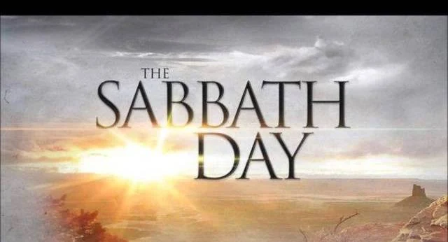

Day of Rest
As said in the scriptures, "Remember the Sabbath day, to keep it holy" (Exodus 20:8-11). Some people may wonder how to keep the Sabbath day holy. People have different opinions on what entertainment you should and should not use on the Sabbath. The purpose of this guide is to give you suggestions of movies centered on Christ or wholesome movies for the family.

1 Thus the heavens and the earth were finished, and all the host of them.
2 And on the seventh day God ended his work which he had made; and he rested on the seventh day from all his work which he had made.
3 And God blessed the seventh day, and sanctified it: because that in it he had rested from all his work which God created and made. (Genesis 2:1-3)
President Russell M. Nelson taught: “I learned from the scriptures that my conduct and my attitude on the Sabbath constituted a sign between me and my Heavenly Father. With that understanding, I no longer needed lists of dos and don’ts. When I had to make a decision whether or not an activity was appropriate for the Sabbath, I simply asked myself, ‘What sign do I want to give to God?’ That question made my choices about the Sabbath day crystal clear.”